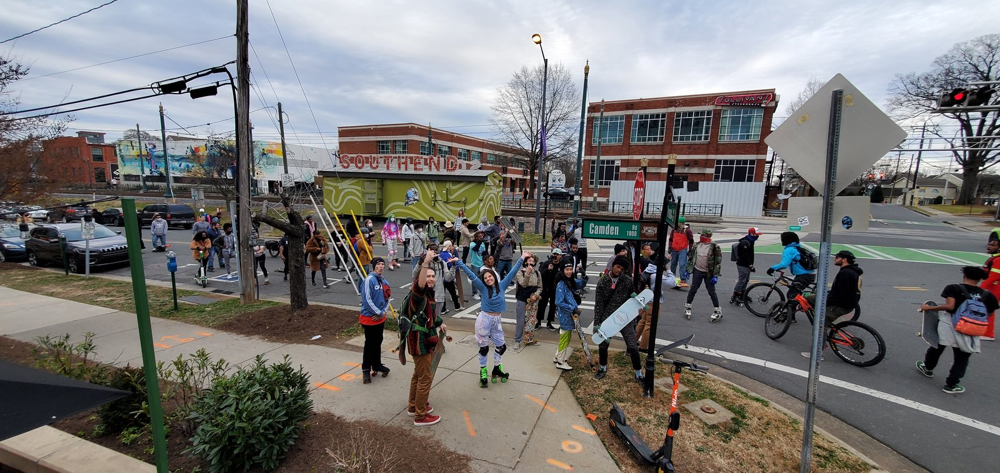
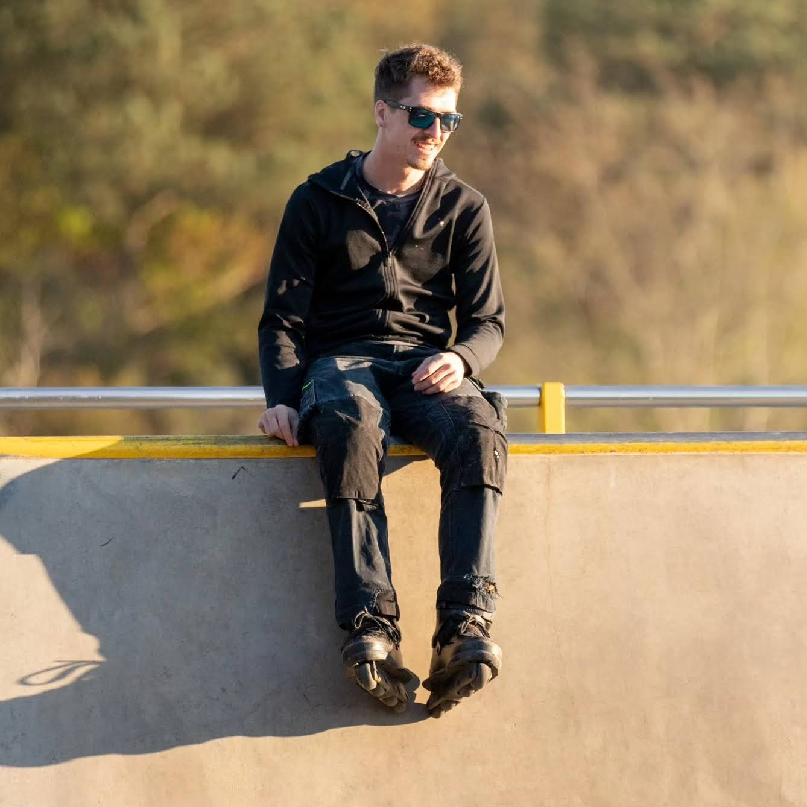
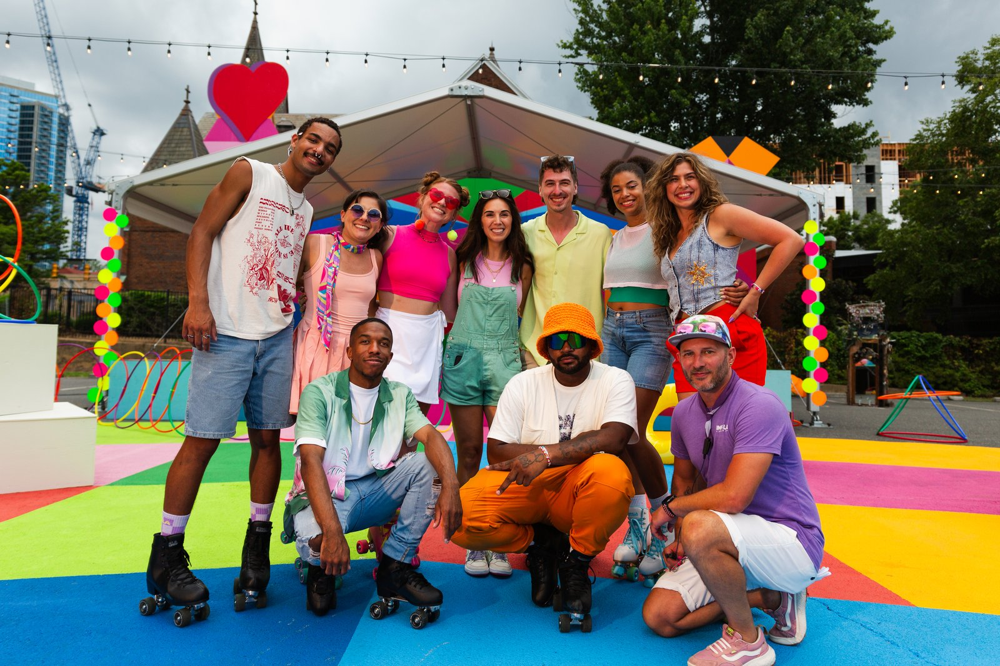
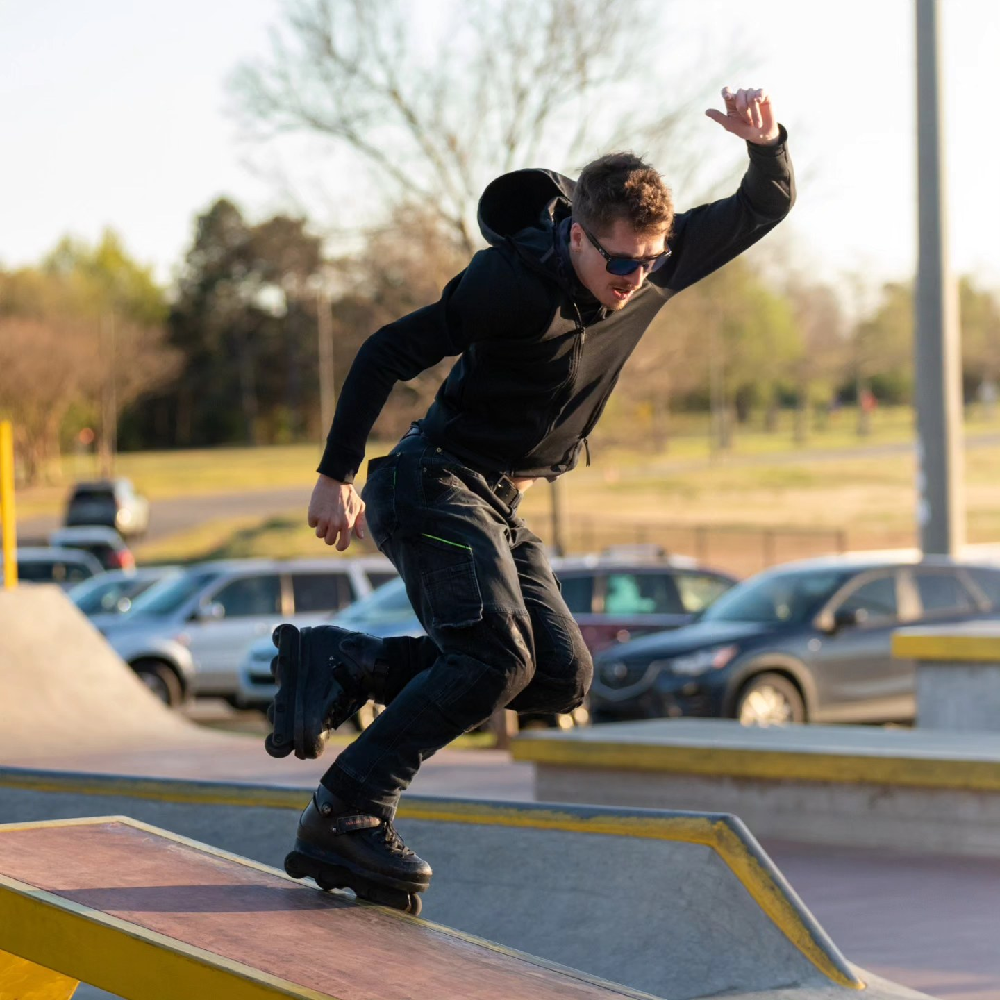
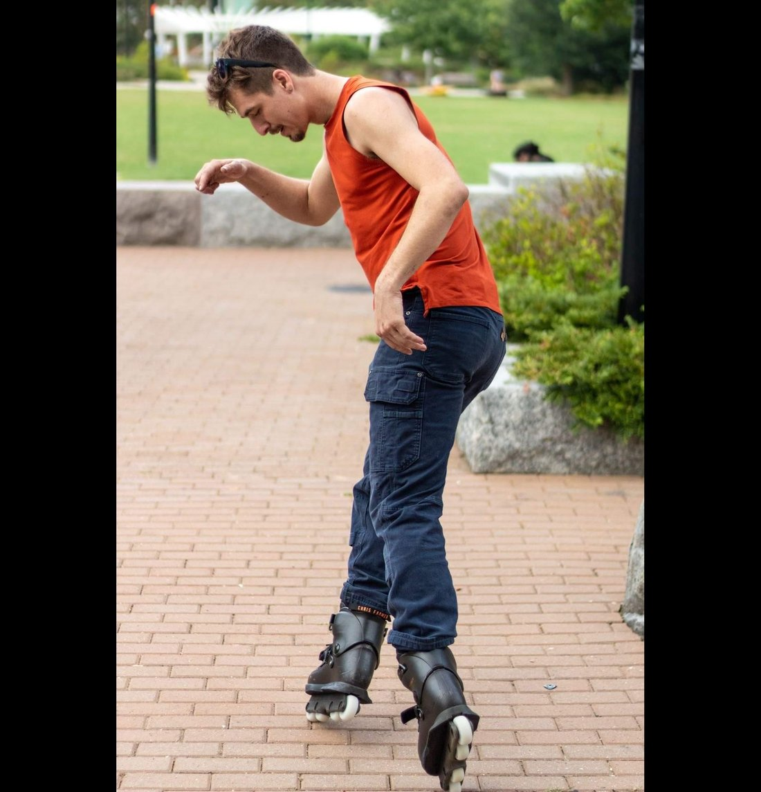
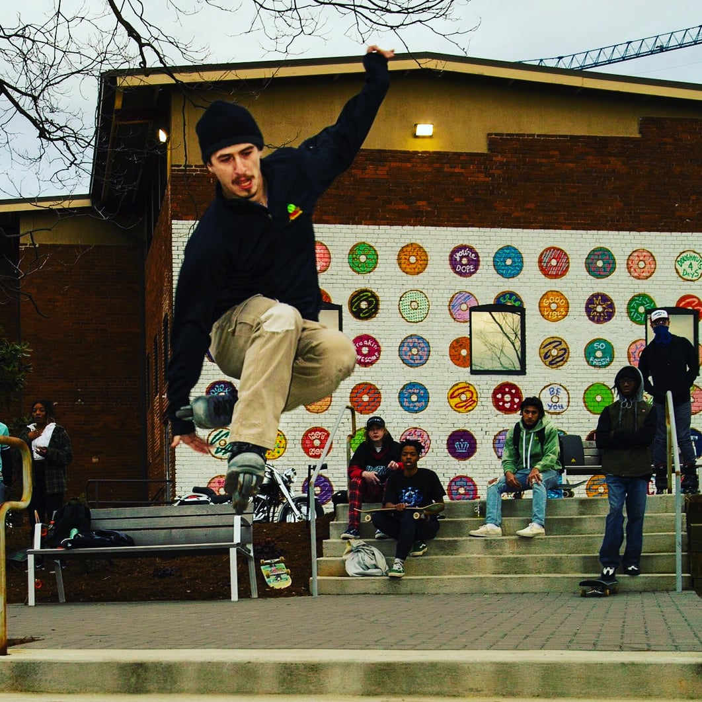

What
Rollerblading and rollerskating are the same idea on two different skate setups. Inline skates, usually called rollerblades, hold their wheels in a single row under the boot, which makes them fast and nimble. Quad skates hold two pairs of wheels side by side, which makes them stable and easy to steer. Either way, you strap wheels to your feet and the pavement turns into a playground.
It costs far less than most hobbies to start, it works as transport, exercise, or a whole afternoon at a park, and it scales from a slow lap around the block to a full session in a bowl. You can pick it up at any age and keep going for decades — in Charlotte, a single green light downtown can turn into a rolling crowd like the one below.
- Fitness and urban skating: long, smooth distance on trails and streets
- Aggressive skating: grinds, airs, and rails at the skate park
- Speed skating: laps and races on inline racing skates
- Roller derby: full-contact quad skating on a flat track
- Artistic skating: spins, jumps, and routines set to music
- Rink and recreational skating: the classic Friday-night roll

Photo of my own, not AI-generated: the Charlotte street skate crew taking over the intersection at Camden Road.
Who
This page is mine. I am Cole, and I have been on wheels since I was ten years old. Somewhere along the way the casual rolling turned into aggressive inline skating: park skating built around jumps, grinds, and spins. I skate with @letsskatecharlotte, a local group that takes over downtown spots, and that crew is half the reason I keep lacing up. Skating has even paid a little: I appeared in a commercial for Impala Skate, which is still the coolest credit on my resume.
The best part is who else shows up. Rinks, derby leagues, and skate parks are full of people who will happily tell a stranger which wheel hardness to buy. It is a solo sport with a group chat attached.
- Aggressive inline skaters chasing rails, ledges, and airs
- Kids on their first pair of adjustable quads
- Commuter bladers cutting through downtown
- Derby players who practice three nights a week
- Anyone who just wants low-impact cardio that does not feel like a gym

Photo of my own, not AI-generated: catching my breath on the ledge between sessions.
When
Late spring through early fall is prime season: warm pavement, long daylight, and dry asphalt. Summer early mornings and evenings are the sweet spot, because midday heat makes the surface soft and the ride slow. Winter does not end the hobby either, it just moves it indoors to a rink.
As for time of day, an hour before sunset is hard to beat. The pavement has cooled, the light is low and flat, and the park is nearly empty. Weekend sessions — whether it is a rink, a rainbow-colored pop-up court, or a downtown street skate — are the loudest, friendliest hours of the week.
| When | Best For | Why |
|---|---|---|
| Weekday mornings | Trail and commuting | Empty paths, cool asphalt |
| Weekday evenings | Park sessions | The park crowd shows up after work |
| Weekend afternoons | Group skates and events | The whole crew shows up |
| Winter | Indoor rinks | Weather does not matter inside |

Photo of my own, not AI-generated: the cast of the Impala Skate commercial I appeared in, between takes on an outdoor pop-up rink.
Where
Any smooth, legal, low-traffic surface works. Multi-use greenways and paved trails are the easy answer, and most cities have more of them than people realize. Skate parks are the other half of the hobby, built specifically for ramps, bowls, ledges, and rails. Downtown streets count too: ledges, gaps, and stair sets turn ordinary architecture into a course.
Rinks still exist and are worth finding, especially in winter or after dark. Parking decks at night, empty tennis courts, and freshly paved subdivision streets round out the list. Check the surface first: rough chip-seal and gravel are miserable on small wheels.
- Municipal skate parks for ramps, bowls, ledges, and rails
- Paved greenways and rail trails for distance
- Downtown plazas and stair sets for street lines
- Indoor and outdoor rinks for smooth, level laps
- Empty parking decks and courts after hours

Photo of my own, not AI-generated: locking into a grind at the skatepark.
How
Start with the gear that keeps you upright: a helmet, wrist guards, knee pads, and elbow pads. The pads are not optional when you are learning, because almost every beginner fall lands on a wrist. Then pick a skate that matches the plan: quads for stability and rink work, inlines for distance and speed.
Check the wheels before every session and rotate them as they wear, since the inside edge always goes first. Learn to stop early, because rolling confidently and stopping confidently are the same skill.
- Gear up: helmet, wrist guards, knee and elbow pads
- Pick skates for the surface and style you actually want
- Find a flat, smooth, empty space with nothing to hit
- Practice stance, then gliding, then the heel brake
- Learn to fall forward onto your pads instead of backward
- Increase distance or difficulty only after the basics feel boring

Photo of my own, not AI-generated: rolling a brick plaza, profile view.
Why
Skating is the rare exercise that does not feel like one. You are moving through a place instead of staring at a wall, and the speed is entirely yours to set. It is also genuinely low-impact, which makes it kind to knees that have had enough of running.
The other reason is smaller and better: skating makes ordinary places interesting. A parking lot becomes a spot. A stair set becomes a gap. A donut-shop wall becomes the backdrop for the best photo of the year. That is a good trade for a pair of boots with wheels on them.
- Low-impact cardio that is easy on the knees
- Real transport, not just exercise
- Balance and coordination that carry into everything else
- The specific joy of landing something you have bailed fifty times
- A community that is genuinely happy to see beginners

Photo of my own, not AI-generated: a jump in front of Charlotte's donut-wall mural.
AI Prompts
AI was used for the code and draft text on this page, not for the artwork. The layout, embedded stylesheet, and section-switching script were written with an assistant, and the prompts below describe that work. Every photo in this site is my own — shot at Charlotte parks, plazas, and group skates — and none of the images were generated by AI.
- Build a single-file hobby page with seven switchable sections (What, Who, When, Where, How, Why, AI Prompts), an embedded stylesheet, and JavaScript so only one section shows at a time.
- Use a dark indigo, hot pink, cyan, and yellow color scheme with no Times New Roman, no default blue links, and no plain white background.
- Write the Who section from my details: skating since age ten, aggressive inline park skating, and the @letsskatecharlotte downtown group.
- Rewrite every figure caption to match my own photos instead of generated images.
The prompts were iterative: I asked for the structure first, then tuned color and content, then swapped every placeholder caption for text describing these photographs.
Drawn by hand as an inline SVG asset — the only graphic here not produced by a camera or a generator.